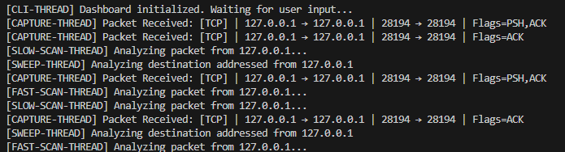

Project Overview
This project demonstrates the design and implementation of a custom NIDS. It monitors live traffic, identifies patterns using Scapy, provides real-time alerts, and offers the user an interface to inspect and filter network traffic in real-time.
Key Features
- Detection of port scans, ICMP sweeps and unusual behavior.
- Real-time visualization interface.
- Packet filtering by port/protocol
- Automated logging and alerting.
Technical Implementation
The system is built using Scapy for deep packet inspection and Python's threading library to manage concurrent data streams without UI degradation.
1. Implementation of the Packet Class
In order to track packets, raw packets which are captured directly from scapy must be converted into an organized format that is easy to track and reference when working with high network traffic.
@dataclass
class Packet:
dst_mac: Optional[str] # Primarily for logging purposes
src_mac: Optional[str] # ^^^^^^^^^^^^^^^^^^^^^^^^^^^^^^
protocol: Optional[str]
type: Optional[int] # If applicable, will track ICMP request vs. reply
src_ip: Optional[str] # Used in synergy with dst_port to track traffic frequency
dst_ip: Optional[str] # Used to detect an ICMP sweep
src_port: Optional[int]
dst_port: Optional[int] # Used in synergy with src_ip to track traffic frequency
flags: Optional[str] # Used to detect different types of TCP scans (ie. SYN, XMAS, NULL, etc.)
timestamp: float # For logging or tracking traffic frequency
def __str__(self): # Allows packets to be printed neatly using 'print()'
parts = [] # Stores all packet variables into a list
# Protocol header
parts.append(f"[{self.protocol}]")
# IP layer
if self.src_ip and self.dst_ip:
parts.append(f"{self.src_ip} → {self.dst_ip}")
# Ports (for TCP/UDP)
if self.src_port is not None and self.dst_port is not None:
parts.append(f"{self.src_port} → {self.dst_port}")
# TCP flags
if self.flags:
parts.append(f"Flags={self.flags}")
# ICMP type
if self.protocol == "ICMP" and self.type is not None:
parts.append(f"Type={self.type}")
return " | ".join(parts) # Connects all variables in list and returns it
2. Packet Capture Engine
The core sniffing engine utilizes a non-blocking callback mechanism. By setting store=False, the system processes packets in seperate threads in
memory to maintain a low resource footprint during high-traffic bursts.
def capture(interface: str, pkt_queues: list[Queue[Packet]]): # * Note: capture takes a list of multiple packet queue's
# to have seperate but identical queues for each type of
# scan in order to prevent race conditions from occuring.
sniff(
iface=interface, # ie. loopback, wifi, ethernet, etc.
filter="ip",
prn=lambda pkt: handle(pkt, pkt_queues), # Callback to handle function each time a packet is intercepted
store=0 # So previous packets are cleared and ready for next one
)
Packets are processed through queues in order to keep a first-in-first-out system. This ensures all packets are processed in order and none are skipped over.
def handle(raw_pkt, packet_queues: list[Queue[Packet]]): # * Note: Raw packet is being processed into
the Packet class
if IP not in raw_pkt: # Packets must contain an IP to be processed
return
# MAC (safe)
src_mac = raw_pkt[Ether].src if Ether in raw_pkt else None # Fields default to None if not found in raw packet
dst_mac = raw_pkt[Ether].dst if Ether in raw_pkt else None
# IP
src_ip = raw_pkt[IP].src
dst_ip = raw_pkt[IP].dst
protocol = protocol_nums.get(raw_pkt[IP].proto, "DEFAULT") # Searches for protocol by number (ie. TCP: 6, ICMP: 1)
# Defaults
type = None # All other fields initialized as None
src_port = None
dst_port = None
flags = None
# Transport layer handling
if TCP in raw_pkt:
src_port = raw_pkt[TCP].sport
dst_port = raw_pkt[TCP].dport
flags = get_flags(raw_pkt) # Only search for flags if protocol is TCP
elif UDP in raw_pkt:
src_port = raw_pkt[UDP].sport
dst_port = raw_pkt[UDP].dport
elif ICMP in raw_pkt: # ICMP packets have a type (reply/request)
type = get_type(raw_pkt)
pkt = Packet( # Initializes packet with all fields. Field is
initialized as 'None' if not found in raw packet
dst_mac, src_mac, protocol,
type, src_ip, dst_ip, src_port,
dst_port, flags, time()
)
for queue in packet_queues: # Loops through each packet queue passed in and adds
packet
# * Note: All queues are identical, multiple queues are
used to prevent race conditions between elements
queue.put(pkt)
3. Multithreading & Concurrency
To prevent the CLI from freezing and detection from running during heavy analysis, the sniffing process is decoupled from the main thread. This allows the user to interact with logs, detections to run, and capturing to happen all simultaneously with no interruption.
def main():
cli_packet_queue = queue.Queue() # Initializes and empty queue for each scan and cli
fast_scan_packet_queue = queue.Queue()
slow_scan_packet_queue = queue.Queue()
sweep_packet_queue = queue.Queue()
cli_thread = threading.Thread( # Creates command line thread
target=start_cli,
args=(cli_packet_queue,),
name="CLI",
daemon=False
)
capture_thread = threading.Thread( # Creates capture thread for packet capture
target=capture,
# * Note: all queues are passed in to be filled
args=(loopback, [cli_packet_queue, fast_scan_packet_queue, slow_scan_packet_queue, sweep_packet_queue]),
name="CAPTURE",
daemon=False
)
fast_scan_thread = threading.Thread( # Creates fast scan thread
target=detect_scan,
args=(fast_scan_packet_queue, 10, 20, 30),
name="FAST-SCAN",
daemon=False
)
slow_scan_thread = threading.Thread( # Creates slow scan thread
target=detect_scan,
args=(slow_scan_packet_queue, 60, 50, 30),
name="SLOW-SCAN",
daemon=False
)
sweep_thread = threading.Thread( # Creates icmp sweep thread
target=detect_sweep,
args=(sweep_packet_queue, 5, 10, 300),
name="SWEEP",
daemon=False
)
cli_thread.start() # Begins all threads concurrently
capture_thread.start()
fast_scan_thread.start()
slow_scan_thread.start()
sweep_thread.start()
main()

[ Technical Proof: Execution of CAPTURE, CLI, and DETECTION threads operating concurrently on seperate queues. ]
4. Packet Analysis Interface
The interface provides a granular view of every packet. Users can click individual entries to see the decoded layers (Ethernet, IP, TCP/UDP) and raw hex data.

[ Screenshot: Detailed packet inspection view ]
5. Intelligent Alerting
Using a signature-based detection logic, the system flags suspicious activity such as SYN scans or ICMP floods. Alerts are pushed to a dedicated high-priority queue for immediate user notification.

[ Screenshot: Security alert triggered by a port scan attempt ]
6. Persistent Logging & Results
All captured events are written to a structured log file (JSON/CSV) for post-mortem analysis. Below is an example of the formatted output generated during a test simulation.
[2026-03-26 14:22:01] ALERT: Potential SYN Scan detected from 192.168.1.5
[2026-03-26 14:22:05] LOG: Captured 452 packets; Avg throughput 1.2MB/s
[2026-03-26 14:23:10] SYSTEM: Log file saved to /logs/nids_report_0326.csv